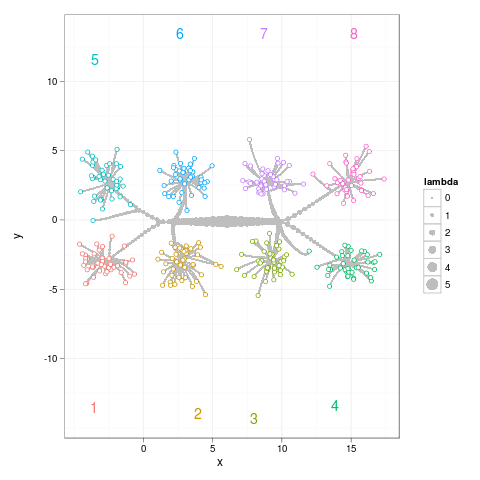
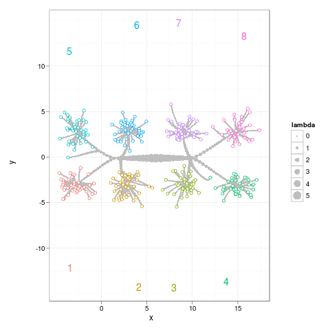
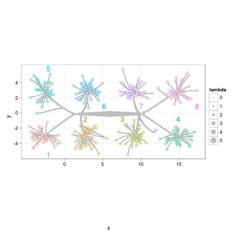
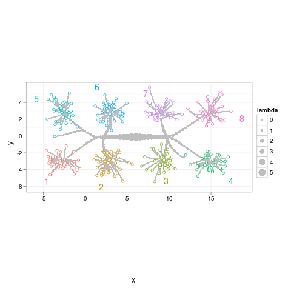
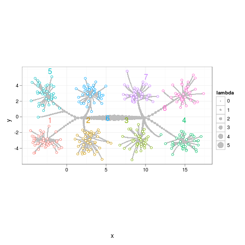
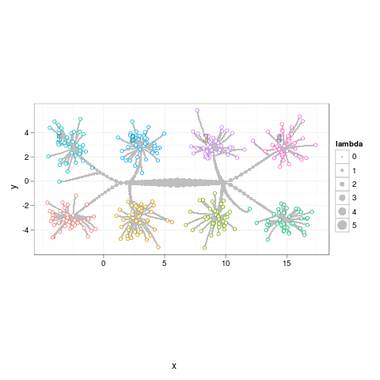

data(normal.l2.cluster,package="directlabels") library(ggplot2) p <- ggplot(normal.l2.cluster$path,aes(x,y))+ geom_path(aes(group=row),colour="grey")+ geom_point(aes(size=lambda),colour="grey")+ geom_point(aes(colour=class),data=normal.l2.cluster$pts,pch=21,fill="white")+ coord_equal()
|  | Calculate closest point on the alpha hull with size of the boxes, and put it outside that point. (only technically correct for aspect="iso" TODO: check and correct for perspective changes.) TODO: doesn't work with ggplot2 since we can't calculate bounding box. direct.label(p,"closest.on.ahull") |
|  | Calculate closest point on the convex hull and put it outside that point. TODO: doesn't work with ggplot2 since we can't calculate bounding box. Assume d is the center for each point cloud and then use orig.data to calculate hull. direct.label(p,"closest.on.chull") |
|  | Label placement method for scatterplots that ensures labels are placed in different places. A grid is drawn over the whole plot. Each cluster is considered in sequence and assigned to the point on this grid which is closest to the point given by the input data points. Makes use of attr(d,"orig.data"). direct.label(p,"empty.grid") |
|  | Use empty.grid with extreme.points. direct.label(p,"extreme.grid") |
|  | Use empty.grid with perpendicular.lines. direct.label(p,"perpendicular.grid") |
|  | Use bounding box information with a small empty.grid to find the a non-colliding label that is close to a point on the convex hull, which is close to the visual center of the data. TODO: does not work with ggplot2 since the backend does not support bounding box calculation. direct.label(p,"smart.grid") |
| Please contact Toby Dylan Hocking if you are using directlabels or have ideas to contribute, thanks! |
| Documentation website generated from comments in R source code using inlinedocs. |
| validate |